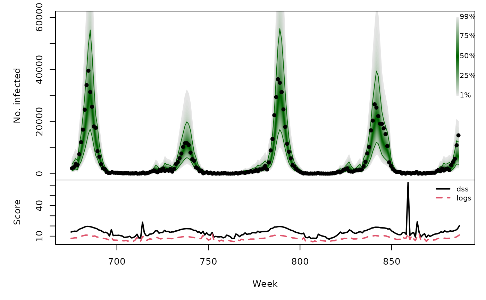
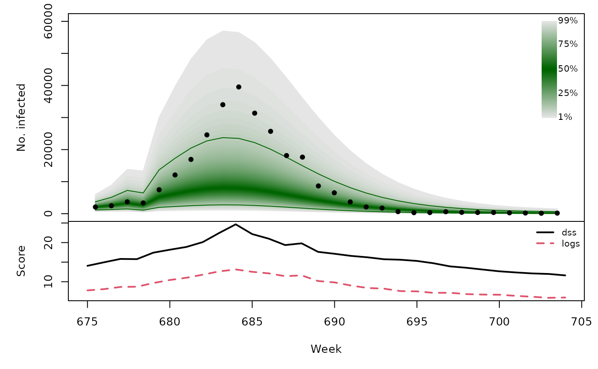

Forecasting Swiss ILI counts using
forecast::auto.arima
Sebastian Meyer
2023-11-29
Source:vignettes/CHILI_arima.Rmd
CHILI_arima.Rmd
options(digits = 4) # for more compact numerical outputs
library("HIDDA.forecasting")
library("ggplot2")
source("setup.R", local = TRUE) # define test periods (OWA, TEST)In this vignette, we use forecasting methods provided by:
The corresponding software reference is:Hyndman R, Athanasopoulos G, Bergmeir C, Caceres G, Chhay L, Kuroptev K, O’Hara-Wild M, Petropoulos F, Razbash S, Wang E, Yasmeen F (2023). forecast: Forecasting Functions for Time Series and Linear Models. R package version 8.21.1, https://CRAN.R-project.org/package=forecast.
Modelling
ARIMA models assume a Gaussian response, so we need to work with transformed counts:
BoxCox.lambda(CHILI, method = "loglik")## [1] -0.05=> Box-Cox procedure suggests a log-transformation
(lambda = 0).
arimafit <- auto.arima(CHILI, lambda = 0, stepwise = FALSE, approximation = FALSE)The above standard approach cannot automatically account for
seasonality because the data have no regular frequency (not a standard
"ts") … But we can manually add sine/cosine covariates and
a christmas indicator just like in the endemic part of the
hhh4 model (see vignette("CHILI_hhh4")).
sarima_cov <- t(sapply(2*pi*seq_along(CHILI)/52.1775,
function (x) c(sin = sin(x), cos = cos(x))))
sarimax_cov <- cbind(sarima_cov,
christmas = as.integer(strftime(index(CHILI), "%V") == "52"))
sarimaxfit <- auto.arima(CHILI, lambda = 0, stepwise = FALSE, approximation = FALSE,
xreg = sarimax_cov)
summary(sarimaxfit)## Series: CHILI
## Regression with ARIMA(2,0,2) errors
## Box Cox transformation: lambda= 0
##
## Coefficients:
## ar1 ar2 ma1 ma2 intercept sin cos christmas
## 1.609 -0.699 -1.068 0.476 7.055 0.827 1.863 -0.477
## s.e. 0.062 0.056 0.062 0.035 0.072 0.106 0.105 0.097
##
## sigma^2 = 0.227: log likelihood = -597.6
## AIC=1213 AICc=1214 BIC=1256
##
## Training set error measures:
## ME RMSE MAE MPE MAPE MASE ACF1
## Training set 441 2537 1031 -13.43 40.6 0.2492 0.653
CHILIdat <- fortify(CHILI)
CHILIdat$sarimaxfitted <- fitted(sarimaxfit)
CHILIdat <- cbind(CHILIdat,
sapply(c(sarimaxlower=0.025, sarimaxupper=0.975), function (p)
InvBoxCox(BoxCox(fitted(sarimaxfit), lambda = sarimaxfit$lambda) +
qnorm(p, sd = sqrt(sarimaxfit$sigma2)),
lambda = sarimaxfit$lambda)))
ggplot(CHILIdat, aes(x=Index, ymin=sarimaxlower, y=sarimaxfitted, ymax=sarimaxupper)) +
geom_ribbon(fill="orange") + geom_line(col="darkred") +
geom_point(aes(y=CHILI), pch=20) +
scale_y_sqrt(expand = c(0,0), limits = c(0,NA))
One-week-ahead forecasts
We compute 213 one-week-ahead forecasts from 2012-W48 to 2016-W51
(the OWA period).
The model selected above is refitted at each time point, but we do
not repeat auto.arima() model selection. This is similar to
so-called time-series cross-validation as implemented in
forecast::tsCV(). However, tsCV() only
computes absolute errors of the point forecasts, whereas we are
interested in assessing probabilistic forecasts so also need the
forecast variance.
For each time point, forecasting with Arima takes about
0.5 seconds, i.e., computing all one-week-ahead forecasts takes approx.
1.8 minutes … (we could parallelize via, e.g., future.apply::future_lapply())
sarimaxowa <- t(simplify2array(lapply(X = OWA, FUN = function (t) {
sarimaxfit_t <- update(sarimaxfit, subset = 1:t)
unlist(predict(sarimaxfit_t, nahead=1, newxreg=sarimax_cov[t+1,,drop=FALSE]))
})))
save(sarimaxowa, file = "sarimaxowa.RData")ARIMA forecasts for the log-counts are normal with mean
pred and variance se^2 =>
back-transformation via exp() is log-normal
.PIT <- plnorm(CHILI[OWA+1], meanlog = sarimaxowa[,"pred"], sdlog = sarimaxowa[,"se"])
hist(.PIT, breaks = seq(0, 1, 0.1), freq = FALSE, main = "", xlab = "PIT")
abline(h = 1, lty = 2, col = "grey")
sarimaxowa_scores <- scores_lnorm(
x = CHILI[OWA+1],
meanlog = sarimaxowa[,"pred"], sdlog = sarimaxowa[,"se"],
which = c("dss", "logs"))
summary(sarimaxowa_scores)## dss logs
## Min. : 7.13 Min. : 4.14
## 1st Qu.:10.91 1st Qu.: 6.30
## Median :13.64 Median : 7.66
## Mean :13.78 Mean : 7.73
## 3rd Qu.:15.65 3rd Qu.: 8.92
## Max. :62.80 Max. :12.63Note that discretized forecast distributions yield almost identical scores (essentially due to the large counts):
sarimaxowa_scores_discretized <- scores_lnorm_discrete(
x = CHILI[OWA+1],
meanlog = sarimaxowa[,"pred"], sdlog = sarimaxowa[,"se"],
which = c("dss", "logs"))
summary(sarimaxowa_scores_discretized)## dss logs
## Min. : 7.13 Min. : 4.14
## 1st Qu.:10.91 1st Qu.: 6.30
## Median :13.64 Median : 7.66
## Mean :13.78 Mean : 7.73
## 3rd Qu.:15.65 3rd Qu.: 8.92
## Max. :62.80 Max. :12.63
sarimaxowa_quantiles <- sapply(X = 1:99/100, FUN = qlnorm,
meanlog = sarimaxowa[,"pred"],
sdlog = sarimaxowa[,"se"])
osaplot(
quantiles = sarimaxowa_quantiles, probs = 1:99/100,
observed = CHILI[OWA+1], scores = sarimaxowa_scores,
start = OWA[1]+1, xlab = "Week", ylim = c(0,60000),
fan.args = list(ln = c(0.1,0.9), rlab = NULL)
)
Long-term forecasts
sarimaxfor <- lapply(TEST, function (testperiod) {
t0 <- testperiod[1] - 1
fit0 <- update(sarimaxfit, subset = 1:t0)
fc <- predict(fit0, n.ahead = length(testperiod),
newxreg = sarimax_cov[testperiod,,drop=FALSE])
list(testperiod = testperiod,
observed = as.vector(CHILI[testperiod]),
pred = fc$pred, se = fc$se)
})
invisible(lapply(sarimaxfor, function (x) {
PIT <- plnorm(x$observed, meanlog = x$pred, sdlog = x$se)
hist(PIT, breaks = seq(0, 1, 0.1), freq = FALSE,
main = format_period(x$testperiod, fmt = "%Y", collapse = "/"))
abline(h = 1, lty = 2, col = "grey")
}))
t(sapply(sarimaxfor, function (x) {
quantiles <- sapply(X = 1:99/100, FUN = qlnorm,
meanlog = x$pred, sdlog = x$se)
scores <- scores_lnorm(x = x$observed,
meanlog = x$pred, sdlog = x$se,
which = c("dss", "logs"))
osaplot(quantiles = quantiles, probs = 1:99/100,
observed = x$observed, scores = scores,
start = x$testperiod[1], xlab = "Week", ylim = c(0,60000),
fan.args = list(ln = c(0.1,0.9), rlab = NULL))
colMeans(scores)
}))## dss logs
## [1,] 16.50 8.980
## [2,] 16.05 8.324
## [3,] 16.68 9.071
## [4,] 16.48 9.161